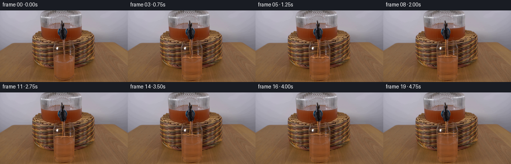
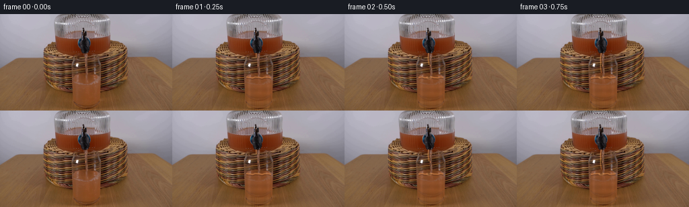
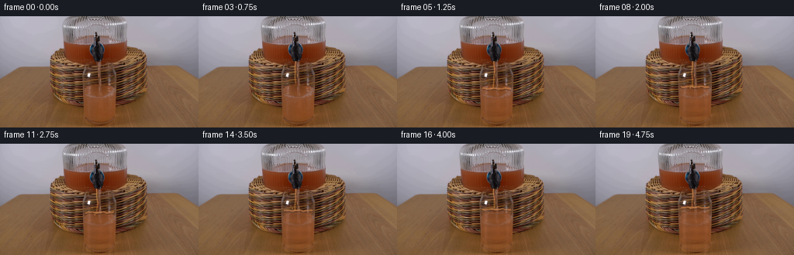
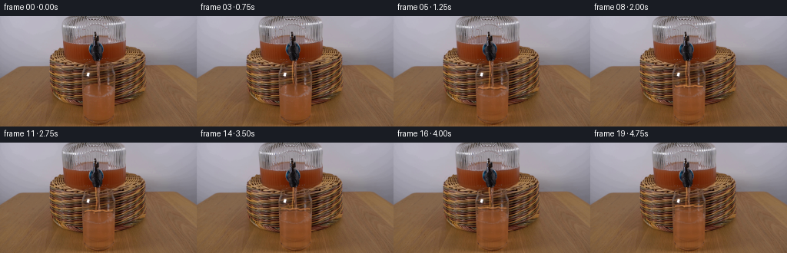
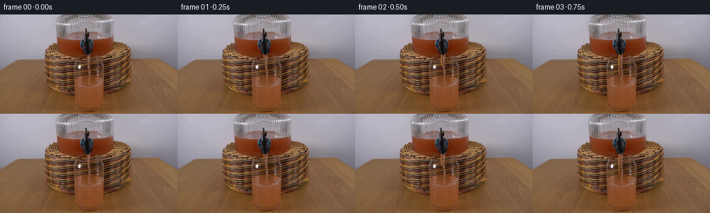

CODING AGENTS AS PIXEL WORLD MODELS
traex/DeepSeek-V4.1-Flash · 0071
点击播放 · 原生 RGB 像素
逐轮保存的候选
回放视频、检查图与代码变化。
每份候选均可单独播放。实际图片检查记录在下方工具轨迹中。
候选 01播放与检查图
点击播放 · 原生 RGB 像素


展开代码变化
--- 上一保存版本
+++ 本次保存版本
@@ -0,0 +1,266 @@
+from pathlib import Path
+
+import cv2
+import numpy as np
+from PIL import Image
+
+import artifact_io
+
+
+CASE_DIR = Path(__file__).resolve().parent
+FRAME_COUNT = 20
+FPS = 4
+HEIGHT = 144
+WIDTH = 256
+
+# Geometry measured from the supplied plate.
+NOZZLE_X = 125.2
+NOZZLE_Y = 57.5
+GLASS_TOP = 64.0
+GLASS_BOTTOM = 140.5
+GLASS_LEFT = 106.0
+GLASS_RIGHT = 150.0
+INITIAL_SURFACE = 94.0
+FINAL_SURFACE = 82.0
+IMPACT_FRAME = 3.5
+
+
+def smoothstep(a, b, x):
+ t = np.clip((x - a) / (b - a), 0.0, 1.0)
+ return t * t * (3.0 - 2.0 * t)
+
+
+def glass_metrics(y):
+ """Return inner glass extents at a row, including the rounded base."""
+ y = np.asarray(y, dtype=np.float32)
+ top_inset = 2.2
+ bottom_inset = 2.4
+ left = GLASS_LEFT + top_inset
+ right = GLASS_RIGHT - top_inset
+
+ base_t = smoothstep(GLASS_BOTTOM - 8.0, GLASS_BOTTOM, y)
+ base_round = np.sqrt(np.clip(1.0 - base_t * base_t, 0.0, 1.0))
+ left = left + (bottom_inset + 2.0) * (1.0 - base_round)
+ right = right - (bottom_inset + 2.0) * (1.0 - base_round)
+
+ # Slight perspective: the tumbler is a touch narrower at the base.
+ narrow = smoothstep(GLASS_TOP, GLASS_BOTTOM, y)
+ left = left + 1.0 * narrow
+ right = right - 0.8 * narrow
+ return left, right
+
+
+def inside_glass(y, x, margin=0.0):
+ left, right = glass_metrics(y)
+ return (
+ (y >= GLASS_TOP + 1.0)
+ & (y <= GLASS_BOTTOM - 1.2)
+ & (x >= left + margin)
+ & (x <= right - margin)
+ )
+
+
+def stream_geometry(frame_index):
+ t = frame_index / FPS
+ if frame_index == 0:
+ return None
+
+ surface = INITIAL_SURFACE + (FINAL_SURFACE - INITIAL_SURFACE) * smoothstep(
+ IMPACT_FRAME, FRAME_COUNT - 1, frame_index
+ )
+ tip = min(surface - 0.5, NOZZLE_Y + 7.0 + (t - 0.25) * 45.0)
+ if tip <= NOZZLE_Y + 0.6:
+ return None
+ return surface, tip, t
+
+
+def render_stream(image, frame_index):
+ geom = stream_geometry(frame_index)
+ if geom is None:
+ return image
+
+ surface, tip, t = geom
+ out = image.astype(np.float32)
+ yy, xx = np.mgrid[0:HEIGHT, 0:WIDTH]
+ y0 = NOZZLE_Y
+ y1 = max(y0 + 1.0, tip)
+ active = (yy >= y0) & (yy <= y1)
+
+ phase = (yy - y0) * 0.15 - t * 5.1
+ center = (
+ NOZZLE_X
+ + 0.55 * np.sin(phase)
+ + 0.22 * np.sin((yy - y0) * 0.43 + t * 2.2)
+ )
+ # The stream thins under gravity and spreads a little at impact.
+ age = np.clip((yy - y0) / max(1.0, y1 - y0), 0.0, 1.0)
+ half_width = 1.65 - 0.48 * age
+ near_impact = np.exp(-((yy - surface) / 4.0) ** 2)
+ half_width = half_width + 1.15 * near_impact
+ dx = np.abs(xx - center)
+ body = np.clip((half_width + 0.8 - dx) / 1.5, 0.0, 1.0)
+ body *= active
+
+ # A dark meniscus/contact point where the juice leaves the spigot.
+ near_nozzle = np.exp(-((yy - y0) / 3.2) ** 2)
+ body *= 1.0 - 0.22 * near_nozzle
+
+ base = out.copy()
+ warm = np.stack(
+ [
+ 178.0 + 20.0 * np.sin(yy * 0.37 + t * 1.7),
+ 92.0 + 12.0 * np.sin(yy * 0.21 - t * 2.4),
+ 35.0 + 8.0 * np.cos(yy * 0.31 + t),
+ ],
+ axis=-1,
+ )
+ # Juicy body: tinted by the existing scene so the stream retains its grain.
+ juice = 0.56 * base + 0.44 * warm
+ out = out * (1.0 - 0.82 * body[..., None]) + juice * (0.82 * body[..., None])
+
+ highlight_x = center - 0.75
+ highlight = np.exp(-((xx - highlight_x) / 0.72) ** 2) * active
+ highlight *= 1.0 - 0.45 * age
+ highlight_color = np.array([236.0, 173.0, 105.0], dtype=np.float32)
+ out = out * (1.0 - 0.52 * highlight[..., None]) + highlight_color * (
+ 0.52 * highlight[..., None]
+ )
+
+ shadow_x = center + 1.15
+ shadow = np.exp(-((xx - shadow_x) / 0.9) ** 2) * active
+ out *= 1.0 - 0.22 * shadow[..., None]
+
+ # Small airborne droplets after the first impact.
+ if t >= 1.0:
+ droplet_specs = [
+ (-4.5, -1.8, 0.75, 0.10),
+ (4.0, -3.0, 0.62, -0.08),
+ (-7.0, -4.6, 0.48, 0.06),
+ (7.4, -5.1, 0.52, -0.04),
+ ]
+ for k, (dx0, dy0, radius, drift) in enumerate(droplet_specs):
+ cycle = (t * 1.45 + k * 0.21) % 1.0
+ cx = NOZZLE_X + dx0 + drift * cycle * 12.0
+ cy = surface + dy0 - 10.0 * cycle + 15.0 * cycle * cycle
+ a = np.clip(1.0 - dx0 / 9.0, 0.0, 1.0)
+ m = np.clip(radius + 0.6 - np.hypot(xx - cx, yy - cy), 0.0, 1.0) * a
+ out = out * (1.0 - 0.55 * m[..., None]) + np.array(
+ [222.0, 152.0, 91.0]
+ ) * (0.55 * m[..., None])
+
+ return np.clip(out, 0.0, 255.0)
+
+
+def render_liquid(image, frame_index):
+ if frame_index == 0:
+ return image
+
+ out = image.astype(np.float32)
+ t = frame_index / FPS
+ fill = smoothstep(IMPACT_FRAME, FRAME_COUNT - 1, frame_index)
+ surface = INITIAL_SURFACE + (FINAL_SURFACE - INITIAL_SURFACE) * fill
+
+ yy, xx = np.mgrid[0:HEIGHT, 0:WIDTH]
+ inside = inside_glass(yy, xx, margin=0.9)
+ filled = inside & (yy >= surface)
+
+ # Refraction is strongest just below the moving surface.
+ depth = np.clip((yy - surface) / 22.0, 0.0, 1.0)
+ refracted_x = np.clip(
+ np.rint(xx + 0.55 * np.sin(yy * 0.31 + t * 2.1) * (1.0 - depth)).astype(int),
+ 0,
+ WIDTH - 1,
+ )
+ refracted = out[yy, refracted_x]
+
+ # Sample the already-liquid lower glass so the newly filled volume matches it.
+ source_y = np.clip(np.rint(yy + 12.0 + 4.0 * (1.0 - depth)).astype(int), 0, HEIGHT - 1)
+ source_x = np.clip(np.rint(xx + 0.35 * np.sin(yy * 0.19 + t)).astype(int), 0, WIDTH - 1)
+ liquid_ref = out[source_y, source_x]
+ mix = 0.52 + 0.18 * (1.0 - depth)
+ liquid = (1.0 - mix[..., None]) * refracted + mix[..., None] * liquid_ref
+
+ # Grapefruit juice is warmer and more saturated than the clear water.
+ tint = np.array([143.0, 78.0, 38.0], dtype=np.float32)
+ tint_strength = 0.16 + 0.10 * fill
+ liquid = liquid * (1.0 - tint_strength) + tint * tint_strength
+ vertical = 1.0 + 0.035 * np.cos((yy - surface) * 0.55 - t * 2.0)
+ liquid *= vertical[..., None]
+
+ # Preserve the glass's bright side reflections and dark outer edges.
+ side_light = np.exp(-((xx - 113.5) / 2.2) ** 2)
+ side_light += 0.62 * np.exp(-((xx - 143.0) / 1.8) ** 2)
+ liquid = liquid * (1.0 + 0.07 * side_light[..., None])
+ out = out * (1.0 - 0.84 * filled[..., None]) + liquid * (
+ 0.84 * filled[..., None]
+ )
+
+ # A softly luminous liquid surface with a thin dark underside.
+ wave = 0.55 * np.sin((xx - NOZZLE_X) * 0.43 - t * 6.2)
+ wave += 0.22 * np.sin((xx - NOZZLE_X) * 0.91 + t * 3.5)
+ surface_y = surface + wave
+ band = np.clip(1.0 - np.abs(yy - surface_y) / 1.45, 0.0, 1.0)
+ band *= inside
+ surface_color = np.array([205.0, 131.0, 72.0], dtype=np.float32)
+ out = out * (1.0 - 0.74 * band[..., None]) + surface_color * (
+ 0.74 * band[..., None]
+ )
+
+ underside = np.clip(1.0 - np.abs(yy - (surface_y + 2.0)) / 1.1, 0.0, 1.0)
+ underside *= inside
+ out *= 1.0 - 0.24 * underside[..., None]
+
+ # Concentric ripples radiate from the impact point.
+ if frame_index >= 2:
+ impact_age = max(0.0, t - IMPACT_FRAME / FPS)
+ ring_radius = 2.0 + impact_age * 12.5
+ ring = np.exp(-((np.hypot((xx - NOZZLE_X) * 0.72, yy - surface) - ring_radius) / 1.15) ** 2)
+ ring *= inside & (yy >= surface - 1.5) & (yy <= surface + 3.5)
+ ring_alpha = 0.32 * np.exp(-impact_age * 0.55)
+ out = out * (1.0 - ring_alpha * ring[..., None]) + np.array(
+ [232.0, 165.0, 103.0]
+ ) * (ring_alpha * ring[..., None])
+
+ # A second, faster ring keeps the impact from looking like a fixed overlay.
+ ring2_r = 1.0 + impact_age * 7.2
+ ring2 = np.exp(-((np.hypot((xx - NOZZLE_X) * 0.82, yy - surface) - ring2_r) / 0.9) ** 2)
+ ring2 *= inside & (yy >= surface - 1.0) & (yy <= surface + 2.5)
+ ring2_alpha = 0.24 * np.exp(-impact_age * 0.7)
+ out *= 1.0 - ring2_alpha * ring2[..., None]
+
+ # A little foam gathers where the stream enters the liquid.
+ if frame_index >= IMPACT_FRAME:
+ foam = np.exp(-((xx - NOZZLE_X) / 4.8) ** 2) * np.exp(
+ -((yy - surface + 0.3) / 1.25) ** 2
+ )
+ foam *= inside
+ out = out * (1.0 - 0.25 * foam[..., None]) + np.array(
+ [225.0, 173.0, 122.0]
+ ) * (0.25 * foam[..., None])
+
+ return np.clip(out, 0.0, 255.0)
+
+
+def render_frames(first_frame):
+ frames = []
+ for index in range(FRAME_COUNT):
+ if index == 0:
+ frames.append(first_frame.copy())
+ continue
+ frame = render_liquid(first_frame, index)
+ frame = render_stream(frame, index)
+ # Retain the subtle sensor texture of the plate after procedural changes.
+ frames.append(np.clip(np.rint(frame), 0, 255).astype(np.uint8))
+ return np.stack(frames)
+
+
+def main():
+ first_frame = np.asarray(Image.open(CASE_DIR / "first_frame.png").convert("RGB"))
+ assert first_frame.shape == (HEIGHT, WIDTH, 3)
+ frames = render_frames(first_frame)
+ assert np.array_equal(frames[0], first_frame)
+ artifact_io.save(frames, CASE_DIR)
+
+
+if __name__ == "__main__":
+ main()
候选 02播放与检查图
点击播放 · 原生 RGB 像素

展开代码变化
--- 上一保存版本
+++ 本次保存版本
@@ -22,7 +22,7 @@
GLASS_RIGHT = 150.0
INITIAL_SURFACE = 94.0
FINAL_SURFACE = 82.0
-IMPACT_FRAME = 3.5
+IMPACT_FRAME = 3.75
def smoothstep(a, b, x):
@@ -60,13 +60,23 @@
)
+def fill_amount(frame_index):
+ return float(
+ np.clip(
+ (frame_index - IMPACT_FRAME) / (FRAME_COUNT - 1 - IMPACT_FRAME),
+ 0.0,
+ 1.0,
+ )
+ )
+
+
def stream_geometry(frame_index):
t = frame_index / FPS
if frame_index == 0:
return None
- surface = INITIAL_SURFACE + (FINAL_SURFACE - INITIAL_SURFACE) * smoothstep(
- IMPACT_FRAME, FRAME_COUNT - 1, frame_index
+ surface = INITIAL_SURFACE + (FINAL_SURFACE - INITIAL_SURFACE) * fill_amount(
+ frame_index
)
tip = min(surface - 0.5, NOZZLE_Y + 7.0 + (t - 0.25) * 45.0)
if tip <= NOZZLE_Y + 0.6:
@@ -152,12 +162,12 @@
def render_liquid(image, frame_index):
- if frame_index == 0:
+ fill = fill_amount(frame_index)
+ if fill <= 0.0:
return image
out = image.astype(np.float32)
t = frame_index / FPS
- fill = smoothstep(IMPACT_FRAME, FRAME_COUNT - 1, frame_index)
surface = INITIAL_SURFACE + (FINAL_SURFACE - INITIAL_SURFACE) * fill
yy, xx = np.mgrid[0:HEIGHT, 0:WIDTH]
@@ -182,7 +192,7 @@
# Grapefruit juice is warmer and more saturated than the clear water.
tint = np.array([143.0, 78.0, 38.0], dtype=np.float32)
- tint_strength = 0.16 + 0.10 * fill
+ tint_strength = 0.025 + 0.235 * fill
liquid = liquid * (1.0 - tint_strength) + tint * tint_strength
vertical = 1.0 + 0.035 * np.cos((yy - surface) * 0.55 - t * 2.0)
liquid *= vertical[..., None]
@@ -191,8 +201,9 @@
side_light = np.exp(-((xx - 113.5) / 2.2) ** 2)
side_light += 0.62 * np.exp(-((xx - 143.0) / 1.8) ** 2)
liquid = liquid * (1.0 + 0.07 * side_light[..., None])
- out = out * (1.0 - 0.84 * filled[..., None]) + liquid * (
- 0.84 * filled[..., None]
+ fill_alpha = 0.15 + 0.69 * np.sqrt(fill)
+ out = out * (1.0 - fill_alpha * filled[..., None]) + liquid * (
+ fill_alpha * filled[..., None]
)
# A softly luminous liquid surface with a thin dark underside.
@@ -210,26 +221,46 @@
underside *= inside
out *= 1.0 - 0.24 * underside[..., None]
- # Concentric ripples radiate from the impact point.
- if frame_index >= 2:
- impact_age = max(0.0, t - IMPACT_FRAME / FPS)
- ring_radius = 2.0 + impact_age * 12.5
- ring = np.exp(-((np.hypot((xx - NOZZLE_X) * 0.72, yy - surface) - ring_radius) / 1.15) ** 2)
- ring *= inside & (yy >= surface - 1.5) & (yy <= surface + 3.5)
- ring_alpha = 0.32 * np.exp(-impact_age * 0.55)
+ # Repeated impact pulses create rings that expand continuously under the pour.
+ impact_time = IMPACT_FRAME / FPS
+ for pulse in range(3):
+ age = t - impact_time - pulse * 0.56
+ if age < 0.0:
+ continue
+ radius = 1.2 + age * 10.5
+ ring = np.exp(
+ -(
+ (
+ np.hypot((xx - NOZZLE_X) * 0.76, yy - surface)
+ - radius
+ )
+ / 0.95
+ )
+ ** 2
+ )
+ ring *= inside & (yy >= surface - 1.4) & (yy <= surface + 3.2)
+ ring_alpha = 0.19 * np.exp(-age * 0.78)
out = out * (1.0 - ring_alpha * ring[..., None]) + np.array(
[232.0, 165.0, 103.0]
) * (ring_alpha * ring[..., None])
- # A second, faster ring keeps the impact from looking like a fixed overlay.
- ring2_r = 1.0 + impact_age * 7.2
- ring2 = np.exp(-((np.hypot((xx - NOZZLE_X) * 0.82, yy - surface) - ring2_r) / 0.9) ** 2)
- ring2 *= inside & (yy >= surface - 1.0) & (yy <= surface + 2.5)
- ring2_alpha = 0.24 * np.exp(-impact_age * 0.7)
- out *= 1.0 - ring2_alpha * ring2[..., None]
+ trough_radius = 0.5 + age * 7.4
+ trough = np.exp(
+ -(
+ (
+ np.hypot((xx - NOZZLE_X) * 0.84, yy - surface)
+ - trough_radius
+ )
+ / 0.78
+ )
+ ** 2
+ )
+ trough *= inside & (yy >= surface - 0.8) & (yy <= surface + 2.3)
+ trough_alpha = 0.13 * np.exp(-age * 0.9)
+ out *= 1.0 - trough_alpha * trough[..., None]
# A little foam gathers where the stream enters the liquid.
- if frame_index >= IMPACT_FRAME:
+ if fill > 0.0:
foam = np.exp(-((xx - NOZZLE_X) / 4.8) ** 2) * np.exp(
-((yy - surface + 0.3) / 1.25) ** 2
)
候选 03播放与检查图
点击播放 · 原生 RGB 像素


展开代码变化
--- 上一保存版本
+++ 本次保存版本
@@ -172,7 +172,7 @@
yy, xx = np.mgrid[0:HEIGHT, 0:WIDTH]
inside = inside_glass(yy, xx, margin=0.9)
- filled = inside & (yy >= surface)
+ filled = inside & (yy >= surface) & (yy <= GLASS_BOTTOM - 4.0)
# Refraction is strongest just below the moving surface.
depth = np.clip((yy - surface) / 22.0, 0.0, 1.0)
可观测工具轨迹
实际执行的命令与返回图片。
命令 1exit 0
/bin/bash -c "pwd && rg --files -g '"'!*.pyc'"' -g '"'!__pycache__'"' | sed -n '1,200p'"
命令 2exit 0
/bin/bash -c "sed -n '1,240p' prompt.txt"
命令 3exit 0
/bin/bash -c "sed -n '1,280p' GENERATION_RULES.md"
命令 4exit 127
/bin/bash -c "file first_frame.png && python - <<'PY'
from PIL import Image
im=Image.open('first_frame.png')
print(im.mode, im.size)
print(im.getextrema())
PY"命令 5exit 0
/bin/bash -c "sed -n '1,260p' artifact_io.py"
命令 6exit 0
/bin/bash -c "sed -n '1,320p' player_template.html"
命令 7exit 0
/bin/bash -c "python - <<'PY'
from PIL import Image
im=Image.open('first_frame.png')
print(im.mode, im.size, im.getextrema())
print(im.info)
PY"命令 8exit 0
/bin/bash -c "python - <<'PY' import importlib.util for m in ['numpy','PIL','cv2','imageio','scipy','skimage','moviepy']: print(m, bool(importlib.util.find_spec(m))) PY"
命令 9exit 0
/bin/bash -c "python - <<'PY'
from PIL import Image
import numpy as np
from collections import Counter
im=np.array(Image.open('first_frame.png'))
print('shape',im.shape)
# top exact colors
c=Counter(map(tuple, im.reshape(-1,3)))
for col,n in c.most_common(40): print(col,n,round(n/(256*144)*100,2))
PY"命令 10exit 0
/bin/bash -c "python - <<'PY'
import cv2, numpy as np
from PIL import Image
im=np.array(Image.open('first_frame.png'))
Z=im.reshape(-1,3).astype(np.float32)
crit=(cv2.TERM_CRITERIA_EPS+cv2.TERM_CRITERIA_MAX_ITER,100,0.2)
K=16
_,lab,cen=cv2.kmeans(Z,K,None,crit,10,cv2.KMEANS_PP_CENTERS)
lab=lab.reshape(144,256)
yy,xx=np.indices((144,256))
for i in np.argsort(cen.mean(1)):
m=lab==i
ys,xs=np.where(m)
print(f'{i:2d} n={m.sum():5d} rgb={cen[i].round().astype(int)} bbox=({xs.min()},{ys.min()})-({xs.max()},{ys.max()}) mean=({xx[m].mean():.1f},{yy[m].mean():.1f})')
PY"命令 11exit 1
/bin/bash -c "python - <<'PY'
from PIL import Image
im=Image.open('first_frame.png')
# build nearest upscale and several crops into tmp for numeric inspection via ANSI? save only
im.resize((1024,576),Image.Resampling.NEAREST).save('.tmp/frame4x.png')
im.crop((45,20,210,144)).resize((660,496),Image.Resampling.NEAREST).save('.tmp/crop4x.png')
# downsample ascii color category grid 64x36
import numpy as np
A=np.array(im)
# print coarse brightness, dominant hue code
for y in range(0,144,4):
s=''
for x in range(0,256,4):
b=A[y:y+4,x:x+4].mean(0)
r,g,bb=b
if r-g>20 and g-b>10: c='O' if r>120 else 'o'
elif r-g>8: c='w'
elif bb-r>10: c='P'
elif b.mean()>170: c='.'
elif b.mean()>140: c=':'
elif b.mean()>100: c='-'
elif b.mean()>60: c=','
else: c='#'
s+=c
print(f'{y:03d} {s}')
PY"命令 12exit 0
/bin/bash -c "python - <<'PY'
from PIL import Image
import numpy as np
im=Image.open('first_frame.png')
A=np.array(im)
for y in range(0,144,4):
s=''
for x in range(0,256,4):
r,g,bb=A[y:y+4,x:x+4].mean((0,1))
if r-g>20 and g-bb>10: c='O' if r>120 else 'o'
elif r-g>8: c='w'
elif bb-r>10: c='P'
elif (r+g+bb)/3>170: c='.'
elif (r+g+bb)/3>140: c=':'
elif (r+g+bb)/3>100: c='-'
elif (r+g+bb)/3>60: c=','
else: c='#'
s+=c
print(f'{y:03d} {s}')
PY"命令 13exit 0
/bin/bash -c "python - <<'PY'
import cv2,numpy as np
from PIL import Image
A=np.array(Image.open('first_frame.png'))
# print RGB and HSV every 8 px, central region x 50..205 y 20..140
hsv=cv2.cvtColor(A,cv2.COLOR_RGB2HSV)
for y in range(20,141,8):
print('y',y)
for x in range(52,205,8):
print(f'{x}:{tuple(A[y,x])}',end=' ')
print()
PY"命令 14exit 0
/bin/bash -c "python - <<'PY'
import cv2,numpy as np
from PIL import Image
A=np.array(Image.open('first_frame.png'))
G=cv2.cvtColor(A,cv2.COLOR_RGB2GRAY)
E=cv2.Canny(G,20,55)
# ascii edge map at 2x2 blocks
for y in range(0,144,2):
s=''
for x in range(0,256,2):
v=E[y:y+2,x:x+2].max()
s += '#' if v else ' '
print(f'{y:03d} {s}')
PY"命令 15exit 0
/bin/bash -c "python - <<'PY'
import cv2,numpy as np
from PIL import Image
A=np.array(Image.open('first_frame.png'))
G=cv2.cvtColor(A,cv2.COLOR_RGB2GRAY)
E=cv2.Canny(G,15,45)
lines=cv2.HoughLinesP(E,1,np.pi/180,threshold=15,minLineLength=8,maxLineGap=3)
arr=[]
for l in lines[:,0]:
x1,y1,x2,y2=map(int,l); length=((x2-x1)**2+(y2-y1)**2)**.5
angle=np.degrees(np.arctan2(y2-y1,x2-x1))
if abs(angle)<12 or abs(abs(angle)-90)<12:
arr.append((length,angle,(x1,y1,x2,y2)))
for r in sorted(arr,reverse=True)[:100]: print(f'{r[0]:5.1f} {r[1]:6.1f} {r[2]}')
PY"命令 16exit 0
/bin/bash -c "python - <<'PY'
from PIL import Image
import numpy as np, cv2
A=np.array(Image.open('first_frame.png')).astype(float)
# Print 32x18 coarse grid: HSV hue letter + brightness digit
H=cv2.cvtColor(A.astype(np.uint8),cv2.COLOR_RGB2HSV)
for gy in range(18):
s=''
for gx in range(32):
y0=gy*8;y1=(gy+1)*8;x0=gx*8;x1=(gx+1)*8
b=A[y0:y1,x0:x1].mean((0,1)); h=H[y0:y1,x0:x1].mean((0,1)); lum=b.mean()
r,g,bb=b
if r-g>18 and g-bb>10: ch='R' if lum>120 else 'r'
elif r-g>10: ch='W'
elif bb-r>10: ch='B'
elif abs(r-g)<8 and bb-r>3: ch='p'
else: ch='.'
digits=' .:-=+*#%@'
d=digits[min(9,int(lum/256*10))]
s+=ch+d
print(f'{gy*8:03d} {s}')
PY"命令 17exit 0
/bin/bash -c "python - <<'PY'
import numpy as np
from PIL import Image
A=np.array(Image.open('first_frame.png'))
# local mean and std in 4x4 for central crop, print std digit
for y in range(20,144,4):
s=''
for x in range(40,216,4):
b=A[y:y+4,x:x+4].std((0,1)).mean()
s += ' .:-=+*#%@'[min(9,int(b/45*10))]
print(f'{y:03d} {s}')
PY"命令 18exit 1
/bin/bash -c "python - <<'PY'
import cv2, numpy as np
from PIL import Image
A=np.array(Image.open('first_frame.png'))
# Print RGB by bands central x60:200 every row summarized median and edges of color threshold
for y in range(20,145):
row=A[y,60:200]
# median + range
med=np.median(row,axis=0).astype(int); lo=np.percentile(row,10,axis=0).astype(int); hi=np.percentile(row,90,axis=0).astype(int)
if y%2==0: print(y, 'med',med,'10',lo,'90',hi)
PY"命令 19exit 0
/bin/bash -c "python - <<'PY'
import numpy as np
from PIL import Image
A=np.array(Image.open('first_frame.png'))
for y in [0,10,20,30,35,40,45,50,55,60,64,68,72,76,80,90,100,110,120,130,140,143]:
print('\\ny=',y)
for x in range(0,256,16):
b=A[y:min(y+1,144),x:x+16].mean((0,1)).astype(int)
print(f'{x:03d}:{b[0]:03d},{b[1]:03d},{b[2]:03d}',end=' ')
print()
PY"命令 20exit 0
/bin/bash -c "python - <<'PY'
import numpy as np
from PIL import Image
A=np.array(Image.open('first_frame.png'))
# edge strength and likely exact silhouette via segmentation. Show row x ranges where red dominant
for y in range(20,144,2):
m=(A[y,:,0]-A[y,:,2]>20)&(A[y,:,0]-A[y,:,1]>15)
xs=np.where(m)[0]
# contiguous spans
spans=[]
if len(xs):
sp=xs[0];last=xs[0]
for x in xs[1:]:
if x>last+1: spans.append((sp,last));sp=x
last=x
spans.append((sp,last))
print(y,spans)
PY"命令 21exit 0
/bin/bash -c "python - <<'PY'
import cv2,numpy as np
from PIL import Image
A=np.array(Image.open('first_frame.png'))
G=cv2.cvtColor(A,cv2.COLOR_RGB2GRAY)
# rows where horizontal derivative strong, list peaks x
for y in range(24,120,2):
dx=np.abs(np.diff(G[y].astype(int)))
xs=np.argsort(dx)[-8:][::-1]
vals=[(int(x),int(dx[x])) for x in xs if dx[x]>15]
print(y,vals)
PY"命令 22exit 0
/bin/bash -c "python - <<'PY'
import cv2, numpy as np
from PIL import Image
A=np.array(Image.open('first_frame.png'))
# Circle Hough candidates
G=cv2.cvtColor(A,cv2.COLOR_RGB2GRAY)
G=cv2.GaussianBlur(G,(3,3),0.8)
for p2 in [12,15,18,22,26]:
cs=cv2.HoughCircles(G,cv2.HOUGH_GRADIENT,1,8,param1=50,param2=p2,minRadius=8,maxRadius=80)
print('p2',p2)
if cs is not None:
for x,y,r in np.round(cs[0]).astype(int)[:30]: print(x,y,r)
PY"命令 23exit 0
/bin/bash -c "python - <<'PY'
from PIL import Image
import numpy as np
A=np.array(Image.open('first_frame.png'))
# RGB map by hue classes at 2x2 blocks, with categories for central area; include x coords every 20
for y in range(20,144,2):
s=''
for x in range(40,220,2):
r,g,b=A[y:y+2,x:x+2].mean((0,1))
if r-g>30 and g-b>10: ch='R'
elif r-g>15 and g-b>5: ch='r'
elif r-g>15: ch='w'
elif b-r>20: ch='B'
elif b-r>8: ch='b'
elif r>g+5: ch='p'
elif (r+g+b)>510: ch='.'
elif (r+g+b)>390: ch='-'
elif (r+g+b)>270: ch=','
elif (r+g+b)>150: ch=':'
else: ch='#'
s+=ch
print(f'{y:03d} {s}')
print('x labels', ''.join([str((x//10)%10) if x%10==0 else ' ' for x in range(40,220,2)]))
PY"命令 24exit 0
/bin/bash -c "python - <<'PY'
from PIL import Image
import numpy as np
A=np.array(Image.open('first_frame.png')).astype(float)
# classify by normalized chromaticity; print each pixel at 2x2 blocks as symbol:
# R grapefruit/brown, L lighter orange, G gray, P pink-gray, B blue-gray, D dark
for y in range(20,120,2):
s=''
for x in range(60,200,2):
r,g,b=A[y:y+2,x:x+2].mean((0,1)); lum=(r+g+b)/3
if lum<45: ch='#'
elif r-g>35 and g-b>8: ch='R'
elif r-g>20 and g-b>4: ch='r'
elif r-g>12: ch='o'
elif b-r>15: ch='B'
elif abs(r-g)<7 and b-r>2: ch='p'
elif lum>170: ch='.'
elif lum>135: ch=':'
elif lum>105: ch='-'
elif lum>75: ch=','
else: ch=';'
s+=ch
print(f'{y:03d} {s}')
PY"命令 25exit 0
/bin/bash -c "python - <<'PY'
import numpy as np
from PIL import Image
A=np.array(Image.open('first_frame.png')).astype(float)
# gradient orientation via structure tensor; print coherence and angle regions coarse
G=A.mean(2)
gx=np.zeros_like(G); gy=np.zeros_like(G)
gx[:,1:-1]=(G[:,2:]-G[:,:-2])/2; gy[1:-1]=(G[2:]-G[:-2])/2
Jxx=gx*gx; Jyy=gy*gy; Jxy=gx*gy
sig=4
from scipy.ndimage import gaussian_filter
Jxx=gaussian_filter(Jxx,sig); Jyy=gaussian_filter(Jyy,sig); Jxy=gaussian_filter(Jxy,sig)
theta=.5*np.arctan2(2*Jxy,Jxx-Jyy); coh=np.sqrt((Jxx-Jyy)**2+4*Jxy**2)/(Jxx+Jyy+1e-9)
# visualize strong coherent edges, angle as / \\ | -
for y in range(24,120,2):
s=''
for x in range(56,200,2):
c=coh[y:y+2,x:x+2].mean(); t=np.degrees(theta[y:y+2,x:x+2].mean())
if c<.25: ch=' '
elif abs(t)<22.5 or abs(t)>157.5: ch='|'
elif abs(abs(t)-90)<22.5: ch='-'
elif t>0: ch='/'
else: ch='\\\\'
s+=ch
print(f'{y:03d} {s}')
PY"命令 26exit 0
/bin/bash -c "python - <<'PY'
from PIL import Image
import numpy as np
A=np.array(Image.open('first_frame.png'))
xs=[90,100,105,108,110,114,118,122,126,130,134,138,142,146,150,154,160,170]
for y in range(60,144,2):
vals=[]
for x in xs:
b=A[max(0,y-1):min(144,y+1),max(0,x-1):min(256,x+1)].mean((0,1))
vals.append(f'{int(b[0]):02x}{int(b[1]):02x}{int(b[2]):02x}')
print(f'{y:03d}', ' '.join(vals))
print('x', xs)
PY"命令 27exit 0
/bin/bash -c "python - <<'PY'
import cv2,numpy as np
from PIL import Image
A=np.array(Image.open('first_frame.png'))
G=cv2.cvtColor(A,cv2.COLOR_RGB2GRAY)
# edge coordinates for region central, print x peaks per row and y peaks per col
print('row x edge maxima')
for y in range(20,140,2):
dx=np.abs(np.diff(G[y].astype(int)))
# local maxima >20
peaks=[]
for x in range(55,210):
if dx[x]>=20 and dx[x]>=dx[x-1] and dx[x]>=dx[x+1]: peaks.append(x)
print(y,peaks)
PY"命令 28exit 0
/bin/bash -c "python - <<'PY'
from PIL import Image
import numpy as np
A=np.array(Image.open('first_frame.png'))
# estimate silhouette via difference from background row/col medians
# print 2x2 color averages in hex for central, x every 4, y every 4
for y in range(20,144,4):
print(f'y{y:03d}')
for x in range(60,204,4):
b=A[y:y+4,x:x+4].mean((0,1)).astype(int)
print(f'{b[0]:02x}{b[1]:02x}{b[2]:02x}',end=' ')
print()
PY"命令 29exit 0
/bin/bash -c "python - <<'PY'
from PIL import Image
import numpy as np
A=np.array(Image.open('first_frame.png')).astype(float)
# classify red versus gray/background in local grid 1 pixel. output columns extents of dark red for y rows
for y in range(20,125,1):
# background color around x 20:40 and x220:240 interpolate per row
bg=np.concatenate([A[y,15:55],A[y,210:250]],0).mean(0)
d=np.linalg.norm(A[y]-bg,axis=1)
# count segments where color differs and darker, x60:200
m=(d>35)&(A[y].mean(1)<160)
xs=np.where(m[60:200])[0]+60
spans=[]
if len(xs):
sp=last=xs[0]
for x in xs[1:]:
if x>last+2: spans.append((sp,last)); sp=x
last=x
spans.append((sp,last))
if y%2==0: print(y,spans)
PY"命令 30exit 0
/bin/bash -c "python - <<'PY'
from PIL import Image
import numpy as np
A=np.array(Image.open('first_frame.png')).astype(float)
# Correlation patch to infer repeated template structure in central image, e.g. dispenser body vertical
# print x positions of max row darkness between y 32 and 60
for y in range(30,66,2):
v=A[y].mean(1)
# smooth
v=np.convolve(v,np.ones(5)/5,'same')
x=np.argmin(v[60:200])+60
print(y,x,round(v[x],1))
PY"命令 31exit 0
/bin/bash -c "python - <<'PY'
import cv2, numpy as np
from PIL import Image
A=np.array(Image.open('first_frame.png'))
G=cv2.cvtColor(A,cv2.COLOR_RGB2GRAY)
# row band edge / gradient stats central around likely structures
for band in [(24,32),(32,40),(40,48),(48,58),(58,68),(68,80),(80,96),(96,116),(116,140)]:
y0,y1=band
print('\\nband',band)
for x in range(60,200,4):
p=G[y0:y1,x:x+4]
print(f'{x}:{p.mean():.0f}/{p.std():.0f}',end=' ')
print()
PY"命令 32exit 0
/bin/bash -c "python - <<'PY'
import cv2,numpy as np
from PIL import Image
A=np.array(Image.open('first_frame.png'))
G=cv2.cvtColor(A,cv2.COLOR_RGB2GRAY)
# local entropy / variance on 4x4, print digit
from scipy.ndimage import uniform_filter
mean=uniform_filter(G.astype(float),5); sq=uniform_filter((G.astype(float))**2,5); var=np.maximum(sq-mean**2,0)
for y in range(20,120,2):
s=''
for x in range(60,200,2):
v=var[y:y+2,x:x+2].mean()
s += ' .:-=+*#%@'[min(9,int(np.sqrt(v)/22*10))]
print(f'{y:03d} {s}')
PY"命令 33exit 0
/bin/bash -c "python - <<'PY'
import cv2,numpy as np
from PIL import Image
A=np.array(Image.open('first_frame.png'))
# test masks and contours
for name,m in [
('red', (A[:,:,0].astype(int)-A[:,:,1]>20)&(A[:,:,1].astype(int)-A[:,:,2]>5)),
('dark', A.mean(2)<60),
('bright', A.mean(2)>150),
('saturated', (A.max(2).astype(int)-A.min(2).astype(int))>45),
]:
n,lab,stats,cents=cv2.connectedComponentsWithStats(m.astype(np.uint8),8)
print('\\n',name)
for i in np.argsort(stats[1:,4])[::-1][:15]+1:
x,y,w,h,area=stats[i]
print(i,'area',area,'bbox',x,y,w,h,'cent',cents[i].round(1))
PY"命令 34exit 0
/bin/bash -c "python - <<'PY'
import cv2,numpy as np
from PIL import Image
A=np.array(Image.open('first_frame.png'))
# structure masks: row-by-row extent of non-background gray above table and table
bg=[]
for y in range(144):
bg.append(np.median(np.r_[A[y,0:55],A[y,210:256]],axis=0))
# display blocks 4x4 of chroma red etc over center; and vertical profile of dispenser base silhouette
for y in range(20,120,4):
s=''
for x in range(60,200,4):
r,g,b=A[y:y+4,x:x+4].mean((0,1)); br=bg[y]
# red
ch='R' if r-g>25 and g-b>8 else ('r' if r-g>15 else ('W' if r>g+5 else ('.' if (r+g+b)>300 else ('B' if b>r+8 else '-'))))
s+=ch
print(f'{y:03d} {s}')
PY"命令 35exit 0
/bin/bash -c "python - <<'PY'
import numpy as np, cv2
from PIL import Image
A=np.array(Image.open('first_frame.png'))
# print RGB row color average/representative for x bins, threshold silhouettes. Full width 8 px bins y30:65
for y in range(24,68,2):
print('\\ny',y)
for x in range(64,200,8):
b=A[y:y+2,x:x+8].mean((0,1)).astype(int)
print(f'{x}:{b[0]},{b[1]},{b[2]}',end=' ')
print()
PY"命令 36exit 0
/bin/bash -c 'command -v chafa || command -v viu || command -v jp2 || command -v img2txt || command -v python'
命令 37exit 0
/bin/bash -c "python - <<'PY'
import numpy as np
from PIL import Image
A=np.array(Image.open('first_frame.png')).astype(float)
# print a richer coarse image: hue + luminance and dark highlights; 64x36 using half-block? just ANSI truecolor background
# generate ANSI 32 cols x 24 rows with each cell average
for gy in range(18):
row=[]
for gx in range(32):
b=A[gy*8:(gy+1)*8,gx*8:(gx+1)*8].mean((0,1)).astype(int)
row.append(f'\\x1b[48;2;{b[0]};{b[1]};{b[2]}m ')
print(''.join(row)+'\\x1b[0m')
PY"命令 38exit 0
/bin/bash -c "python - <<'PY'
from PIL import Image
import numpy as np
A=np.array(Image.open('first_frame.png')).astype(float)
# background estimate from borders per y, then row silhouette where saturation high or brightness differs
for y in range(20,130,2):
bg=np.median(np.r_[A[y,:55],A[y,210:]],axis=0)
# ratio to bg and chroma
m=(np.linalg.norm(A[y]-bg,axis=1)>20)
# central x extents, allow gaps
xs=np.where(m[60:200])[0]+60
spans=[]
if len(xs):
st=last=xs[0]
for x in xs[1:]:
if x>last+4: spans.append((st,last));st=x
last=x
spans.append((st,last))
print(y,spans)
PY"命令 39exit 0
/bin/bash -c "command -v ffmpeg || true; python - <<'PY'
import importlib.util
print('imageio_ffmpeg', bool(importlib.util.find_spec('imageio_ffmpeg')))
PY"命令 40exit 1
/bin/bash -c "python - <<'PY'
from PIL import Image
import numpy as np
A=np.array(Image.open('first_frame.png')).astype(float)
# print exact colors along x=125 and x=100 vertical
for x in [80,90,100,110,115,120,125,130,135,140,145,150,155,160,170,180,190]:
print('\\nx',x)
for y in range(20,145,2):
b=A[y,x].astype(int)
print(f'{y}:{b[0]},{b[1]},{b[2]}',end=' ')
print()
PY"命令 41exit 0
/bin/bash -c "python - <<'PY'
import cv2, numpy as np
from PIL import Image
A=np.array(Image.open('first_frame.png'))
# HSV print at blocks for colors saturation/hue; central silhouette dark
H=cv2.cvtColor(A,cv2.COLOR_RGB2HSV)
for y in range(20,120,2):
s=''
for x in range(60,200,2):
h,sa,v=H[y:y+2,x:x+2].mean((0,1))
if sa<20: ch='.' if v>150 else ':' if v>110 else ' '
elif h<8 or h>170: ch='R' if v>110 else 'r'
elif h<18: ch='O' if v>110 else 'o'
elif h<35: ch='Y' if v>120 else 'y'
else: ch='G'
s+=ch
print(f'{y:03d} {s}')
PY"命令 42exit 0
/bin/bash -c "python - <<'PY'
import numpy as np
from PIL import Image
A=np.array(Image.open('first_frame.png')).astype(float)
# cluster pixels excluding background using kmeans, print cluster masks coarse 4px and stats
import cv2
M=A[32:144,60:200].reshape(-1,3).astype(np.float32)
crit=(cv2.TERM_CRITERIA_EPS+cv2.TERM_CRITERIA_MAX_ITER,100,.1)
_,lab,cen=cv2.kmeans(M,8,None,crit,20,cv2.KMEANS_PP_CENTERS)
lab=lab.reshape(112,140)
for i in np.argsort(cen.mean(1)):
print(i,cen[i].round().astype(int),(lab==i).sum())
# ascii labels by coarse
for y in range(0,112,2):
s=''
for x in range(0,140,2):
ids,cnts=np.unique(lab[y:y+2,x:x+2],return_counts=True); i=ids[cnts.argmax()]
s+='0123456789ABCDEF'[i]
print(f'{y+32:03d} {s}')
PY"命令 43exit 0
/bin/bash -c "python - <<'PY'
import numpy as np, cv2
from PIL import Image
A=np.array(Image.open('first_frame.png')).astype(np.float32)
# PCA / radial difference? estimate background using row medians then detect object boundaries in each y with gradient
G=cv2.cvtColor(A.astype(np.uint8),cv2.COLOR_RGB2GRAY).astype(float)
# vertical gradient stats per x for rows 25-65
for x in range(70,181,2):
v=np.abs(np.diff(G[22:68,x]))
print(f'{x}:{v.mean():.1f}/{v.max():.0f}',end=' ')
print()
PY"命令 44exit 0
/bin/bash -c "python - <<'PY'
from PIL import Image
import numpy as np
A=np.array(Image.open('first_frame.png')).astype(int)
# mark high-red (poured juice), neutral gray, dark, using 2x2 blocks. x labels
for y in range(20,120,2):
s=''
for x in range(60,200,2):
r,g,b=A[y:y+2,x:x+2].mean((0,1))
if r-g>35 and g-b>20: ch='@' # strong red orange
elif r-g>25 and g-b>10: ch='O'
elif r-g>18: ch='o'
elif r-g>8: ch='w'
elif b-r>12: ch='B'
elif b-r>4: ch='p'
elif r+g+b<210: ch='#'
elif r+g+b<330: ch='+'
elif r+g+b<450: ch='-'
else: ch='.'
s+=ch
print(f'{y:03d} {s}')
PY"命令 45exit 0
/bin/bash -c "python - <<'PY'
import numpy as np
from PIL import Image
A=np.array(Image.open('first_frame.png')).astype(int)
# print row luminance around glass with x grid markers
xs=list(range(96,160))
print(' '+''.join(str(x//10%10) for x in xs))
print(' '+''.join(str(x%10) for x in xs))
for y in range(64,126):
lum=A[y,xs].mean(1)
s=''
for v in lum:
s += ' .:-=+*#%@'[min(9,int(v/256*10))]
print(f'{y:03d} {s}')
PY"命令 46exit 0
/bin/bash -c "python - <<'PY'
import numpy as np
from PIL import Image
A=np.array(Image.open('first_frame.png')).astype(int)
# compare rows to find table top horizontal edge: row difference mean
for y in range(50,90):
d=np.abs(A[y].astype(float)-A[y-1]).mean()
print(y,round(d,2),A[y,:64].mean((0,1)).astype(int),A[y,192:].mean((0,1)).astype(int))
PY"命令 47exit 0
/bin/bash -c "python - <<'PY'
import numpy as np
from PIL import Image
A=np.array(Image.open('first_frame.png')).astype(int)
# print vertical color change around possible glass rim at x 110-150
for x in range(100,161,2):
print('\\nx',x)
for y in range(60,116,2):
r,g,b=A[y,x]
# brightness char and chroma R-G
print(f'{y}:{r:03d},{g:03d},{b:03d}',end=' ')
print()
PY"命令 48exit 0
/bin/bash -c "python - <<'PY'
from PIL import Image
import numpy as np
A=np.array(Image.open('first_frame.png'))
# print x-run average RGB around glass body, detect likely boundaries from color stable region
for x in range(90,171):
b=A[95:125,x].mean(0)
print(f'{x}:{b[0]:.0f},{b[1]:.0f},{b[2]:.0f}')
PY"命令 49exit 0
/bin/bash -c "python - <<'PY'
from PIL import Image
import numpy as np
A=np.array(Image.open('first_frame.png'))
# print average vertical gradients around x=100,110,120,130,140,150,160
for x in [105,106,107,108,109,110,120,130,140,148,149,150,151,152]:
print('\\nx',x)
for y in range(80,142,2):
b=A[y,x].astype(int)
print(f'{y}:{b[0]},{b[1]},{b[2]}',end=' ')
print()
PY"命令 50exit 0
/bin/bash -c "python - <<'PY'
from PIL import Image
import numpy as np
A=np.array(Image.open('first_frame.png')).astype(float)
# print detected background (row median at side) vs central color in normalized chroma, mark if not background
for y in range(20,144,2):
bg=np.median(np.r_[A[y,:50],A[y,206:]],axis=0)
print(f'{y:03d} bg={bg.astype(int)}',end=' ')
# center x 120
for x in [80,100,110,120,130,140,150,160]:
b=A[y,x].astype(int); print(f'{x}:{b[0]},{b[1]},{b[2]}',end=' ')
print()
PY"命令 51exit 0
/bin/bash -c "python - <<'PY'
from PIL import Image
import numpy as np
A=np.array(Image.open('first_frame.png')).astype(int)
# print a 2x2 mosaic with chars based on object classes, show scale and x/y labels
# classify special:
# red/orange (dispenser liquid body) vs neutral metal
for y in range(24,70):
s=''
for x in range(72,176):
r,g,b=A[y,x]
if r-g>40 and g-b>15: ch='@'
elif r-g>30: ch='O'
elif r-g>20: ch='o'
elif b-r>10: ch='B'
elif r+g+b<120: ch='#'
elif r+g+b<210: ch='+'
elif r+g+b<330: ch='-'
elif r+g+b<450: ch=':'
else: ch='.'
s+=ch
print(f'{y:03d} {s}')
PY"命令 52exit 0
/bin/bash -c "python - <<'PY'
import numpy as np
from PIL import Image
A=np.array(Image.open('first_frame.png')).astype(int)
# row run-length at central x around y 36-60 classify rough chroma
for y in [35,36,37,38,39,40,42,44,46,48,50,52,54,56,58,60,62]:
row=A[y]
# red strength rr
rr=row[:,0]-row[:,1]
# spans rr > 30
m=rr>30; xs=np.where(m)[0]
spans=[]
if len(xs):
st=last=xs[0]
for x in xs[1:]:
if x>last+1: spans.append((st,last));st=x
last=x
spans.append((st,last))
print(y,spans)
PY"命令 53exit 0
/bin/bash -c "python - <<'PY'
import numpy as np
from PIL import Image
A=np.array(Image.open('first_frame.png')).astype(int)
# Print a 4x upsample nearest, save in tmp, and also generate ppm raw? no visual tool
# summarize glass liquid by x segments mean color rows 90-140
for x0,x1 in [(108,117),(117,126),(126,135),(135,144),(144,149),(150,160),(160,170),(100,108)]:
print(x0,x1)
for y0,y1 in [(80,90),(90,100),(100,110),(110,120),(120,130),(130,140)]:
b=A[y0:y1,x0:x1].mean((0,1)).astype(int)
print((y0,y1),b,end=' ')
print()
PY"命令 54exit 0
/bin/bash -c "python - <<'PY'
import numpy as np
from PIL import Image
A=np.array(Image.open('first_frame.png')).astype(int)
# print rows with brightness bars for likely glass x104:151, mark x every 10
xs=range(104,152)
print(' '+''.join(str(x//10%10) for x in xs))
print(' '+''.join(str(x%10) for x in xs))
for y in range(80,144):
lum=A[y,xs].mean(1)
s=''
for v in lum:
s += ' .:-=+*#%@'[min(9,int(v/256*10))]
print(f'{y:03d} {s}')
PY"命令 55exit 0
/bin/bash -c "python - <<'PY'
from PIL import Image
import numpy as np
A=np.array(Image.open('first_frame.png')).astype(float)
# print 1 pixel actual around region with coordinates in a big ascii using ansi true color every 2x2
# use ANSI half blocks: upper/lower pixels as foreground/background, width 128 => 64 char
for y in range(20,144,2):
s=''
for x in range(60,200,2):
p=A[y,x].astype(int); q=A[y+1,x].astype(int)
s+=f'\\x1b[38;2;{p[0]};{p[1]};{p[2]}m\\x1b[48;2;{q[0]};{q[1]};{q[2]}mâ'
print(s+'\\x1b[0m')
PY"命令 56exit 0
/bin/bash -c "python - <<'PY'
import numpy as np
from PIL import Image
A=np.array(Image.open('first_frame.png')).astype(int)
# char based on brightness + red chroma around nozzle/rim, 1px each x108..150 y52..82
for y in range(52,83):
s=''
for x in range(108,151):
r,g,b=A[y,x]; lum=(r+g+b)/3
if r-g>45: ch='@'
elif r-g>30: ch='O'
elif r-g>18: ch='o'
elif b-r>10: ch='B'
elif lum<45: ch='#'
elif lum<75: ch='+'
elif lum<105: ch='-'
elif lum<135: ch=':'
elif lum<165: ch='.'
else: ch=' '
s+=ch
print(f'{y:03d} {s}')
PY"命令 57exit 0
/bin/bash -c "python - <<'PY'
import numpy as np
from PIL import Image
A=np.array(Image.open('first_frame.png')).astype(int)
# x coordinate center of dark nozzle for each row
for y in range(24,60):
vals=A[y,:,0].astype(int)+A[y,:,1]+A[y,:,2]
x=vals[100:160].argmin()+100
print(y,x,vals[x]//3,tuple(A[y,x]))
PY"命令 58exit 0
/bin/bash -c "python - <<'PY'
from PIL import Image
import numpy as np
A=np.array(Image.open('first_frame.png'))
# print 1px rows 96:112 x104:152 as RGB brightness and R-G-B signature
for y in range(94,116):
print(f'{y:03d}',end=' ')
for x in range(104,152):
r,g,b=map(int,A[y,x])
# hue categories: R orange, r red, p neutral, d dark
if r-g>35: ch='O'
elif r-g>20: ch='o'
elif b-r>8: ch='B'
elif r+g+b<120: ch='#'
elif r+g+b<210: ch='+'
elif r+g+b<330: ch='-'
elif r+g+b<450: ch=':'
else: ch='.'
print(ch,end='')
print()
print('x '+''.join(str(x//10%10) for x in range(104,152)))
print(' '+''.join(str(x%10) for x in range(104,152)))
PY"命令 59exit 0
/bin/bash -c "python - <<'PY'
from PIL import Image
import numpy as np
A=np.array(Image.open('first_frame.png')).astype(int)
for y in range(20,96,2):
print(f'{y:03d}',end=' ')
for x in range(108,145,2):
r,g,b=A[y:y+2,x:x+2].mean((0,1))
# chars relative
if r-g>35: ch='@'
elif r-g>22: ch='O'
elif r-g>12: ch='o'
elif b-r>12: ch='B'
elif r+g+b<100: ch='#'
elif r+g+b<180: ch='+'
elif r+g+b<280: ch='-'
elif r+g+b<390: ch=':'
else: ch='.'
print(ch,end='')
print()
print('x '+''.join(str((x//10)%10) for x in range(108,145,2)))
print(' '+''.join(str(x%10) for x in range(108,145,2)))
PY"命令 60exit 0
/bin/bash -c "python - <<'PY'
from PIL import Image
import numpy as np
A=np.array(Image.open('first_frame.png')).astype(int)
# print x-position of dark nozzle per row and bounding width below 60 brightness
for y in range(24,62):
m=A[y].mean(1)<65
xs=np.where(m[95:155])[0]+95
spans=[]
if len(xs):
st=last=xs[0]
for x in xs[1:]:
if x>last+1: spans.append((st,last));st=x
last=x
spans.append((st,last))
print(y,spans)
PY"命令 61exit 1
/bin/bash -c "python - <<'PY'
import numpy as np
from PIL import Image
A=np.array(Image.open('first_frame.png')).astype(int)
# summarize y of likely horizontal surfaces: row diff in central x 108:150
for y in range(60,145):
d=np.abs(A[y,108:150].astype(float)-A[y-1,108:150]).mean()
print(y,round(d,2))
PY"命令 62exit 0
/bin/bash -c "python - <<'PY'
import cv2,numpy as np
from PIL import Image
A=np.array(Image.open('first_frame.png'))
# print local per-pixel class at x108:151 y100:112 showing RGB medians
for y in range(100,113):
print('y',y)
for x0 in range(108,151,4):
b=A[y,x0:x0+4].mean(0).astype(int)
print(f'{x0}:{b[0]},{b[1]},{b[2]}',end=' ')
print()
PY"命令 63exit 0
/bin/bash -c "python - <<'PY'
from PIL import Image
import numpy as np
A=np.array(Image.open('first_frame.png')).astype(int)
# print R-G differences x106..151 for y 90:112 every 2
print('x ', ''.join(f'{(x//10)%10}' for x in range(106,152,2)))
print(' ', ''.join(f'{x%10}' for x in range(106,152,2)))
for y in range(90,113,2):
s=''
for x in range(106,152,2):
d=A[y:y+2,x:x+2,0].mean()-A[y:y+2,x:x+2,1].mean()
if d>75: c='@'
elif d>65: c='O'
elif d>55: c='o'
elif d>45: c='w'
elif d>35: c='.'
elif d>20: c=','
else: c=' '
s+=c
print(f'{y:03d}',s)
PY"命令 64exit 0
/bin/bash -c "python - <<'PY'
import numpy as np
from PIL import Image
A=np.array(Image.open('first_frame.png')).astype(float)
# edge / color summary on coarse grid with cell average, assign characters based on nearest of named palette clusters from quantiles
# kmeans 12, show symbol per cluster and centroid. This is for our understanding.
import cv2
Z=A.reshape(-1,3).astype(np.float32)
crit=(cv2.TERM_CRITERIA_EPS+cv2.TERM_CRITERIA_MAX_ITER,100,0.2)
_,lab,cen=cv2.kmeans(Z,12,None,crit,20,cv2.KMEANS_PP_CENTERS)
# sort by RGB
order=np.lexsort((cen[:,2],cen[:,1],cen[:,0])); chars='0123456789AB'
mapping={int(i):chars[j] for j,i in enumerate(order)}
print('clusters')
for j,i in enumerate(order): print(chars[j],cen[i].round().astype(int),int((lab.reshape(144,256)==i).sum()))
print('grid 64x36, 4x4 cells')
L=lab.reshape(144,256)
for y in range(0,144,4):
s=''
for x in range(0,256,4):
ids,cnt=np.unique(L[y:y+4,x:x+4],return_counts=True)
i=ids[cnt.argmax()]; s+=mapping[int(i)]
print(f'{y:03d} {s}')
PY"命令 65exit 0
/bin/bash -c "python - <<'PY'
import numpy as np
from PIL import Image
A=np.array(Image.open('first_frame.png')).astype(int)
# Use spatial gradient magnitude to identify horizontal table line at x0:60 and x190:256 separately
for region in [(0,55),(190,256)]:
print('region',region)
for y in range(55,80):
b=A[y,region[0]:region[1]].mean(0)
print(y,b.round().astype(int),end=' | ')
print()
PY"命令 66exit 0
/bin/bash -c "python - <<'PY'
import numpy as np
from PIL import Image
A=np.array(Image.open('first_frame.png')).astype(int)
# print red hue char for 1 pixel, x100:160 y58:92 with numbers and brightness
for y in range(58,93):
s=''
for x in range(100,161):
r,g,b=A[y,x]
d=r-g
if d>60: c='@'
elif d>45: c='O'
elif d>30: c='o'
elif d>15: c='w'
elif b-r>15: c='B'
elif r+g+b<90: c='#'
elif r+g+b<150: c='+'
elif r+g+b<240: c='-'
elif r+g+b<360: c=':'
else: c='.'
s+=c
print(f'{y:03d} {s}')
print(' '+''.join(str(x//10%10) for x in range(100,161)))
print(' '+''.join(str(x%10) for x in range(100,161)))
PY"命令 67exit 0
/bin/bash -c "python - <<'PY'
import numpy as np
from PIL import Image
A=np.array(Image.open('first_frame.png')).astype(int)
# Look at object geometry in first frame: compute left/right transitions from background each row using nearest bg, print dE
for y in range(20,80,2):
bg=np.median(np.r_[A[y,:55],A[y,210:]],0)
d=np.linalg.norm(A[y]-bg,axis=1)
xs=np.where(d>25)[0]
# in central x 60:200 spans
xs=xs[(xs>=60)&(xs<200)]
spans=[]
if len(xs):
st=last=xs[0]
for x in xs[1:]:
if x>last+3: spans.append((st,last));st=x
last=x
spans.append((st,last))
print(y,spans)
PY"命令 68exit 0
/bin/bash -c "python - <<'PY'
import numpy as np
from PIL import Image
A=np.array(Image.open('first_frame.png')).astype(int)
# print central region 60:200 y32:72 using darkness plus hue; one char per pixel at 2x2
for y in range(32,73,2):
s=''
for x in range(60,200,2):
r,g,b=A[y:y+2,x:x+2].mean((0,1)); lum=(r+g+b)/3
if r-g>40: ch='@'
elif r-g>25: ch='O'
elif r-g>15: ch='o'
elif r-g>7: ch='w'
elif b-r>12: ch='B'
elif lum<45: ch='#'
elif lum<75: ch='+'
elif lum<105: ch='-'
elif lum<135: ch=':'
elif lum<165: ch='.'
else: ch=' '
s+=ch
print(f'{y:03d} {s}')
print(' '+''.join(str((x//10)%10) for x in range(60,200,2)))
print(' '+''.join(str(x%10) for x in range(60,200,2)))
PY"命令 69exit 0
/bin/bash -c "python - <<'PY'
import numpy as np
from PIL import Image
A=np.array(Image.open('first_frame.png')).astype(int)
# zoom glass y60:145 x100:155, mark boundaries with chars based on smoothed brightness and chroma; 1px x 1px but print at 1x
for y in range(60,144):
s=''
for x in range(100,156):
r,g,b=A[y,x]; lum=(r+g+b)/3
if r-g>50: ch='@'
elif r-g>35: ch='O'
elif r-g>20: ch='o'
elif r-g>10: ch='w'
elif b-r>15: ch='B'
elif lum<40: ch='#'
elif lum<65: ch='+'
elif lum<90: ch='-'
elif lum<120: ch=':'
elif lum<150: ch='.'
else: ch=' '
s+=ch
print(f'{y:03d} {s}')
print(' '+''.join(str(x//10%10) for x in range(100,156)))
print(' '+''.join(str(x%10) for x in range(100,156)))
PY"命令 70exit 0
/bin/bash -c "sed -n '1,260p' generate.py"
命令 71exit 0
/bin/bash -c 'cat prompt.txt'
命令 72exit 0
/bin/bash -c 'cat GENERATION_RULES.md'
命令 73exit 0
/bin/bash -c "find . -maxdepth 2 -type f -printf '%p %s bytes\\n' | sort"
命令 74exit 0
/bin/bash -c "sed -n '261,360p' generate.py"
命令 75exit 1
/bin/bash -c 'python generate.py'
命令 76exit 0
/bin/bash -c 'python generate.py'
命令 77exit 1
/bin/bash -c "python - <<'PY'
import numpy as np
from PIL import Image
from pathlib import Path
p=Path('.')
ff=np.asarray(Image.open('first_frame.png').convert('RGB'))
z=np.load('pixels.npz')
print(z.files)
f=z['frames']
print('shape',f.shape,'dtype',f.dtype,'identical0',np.array_equal(f[0],ff))
for i,im in enumerate(f):
d=np.max(np.abs(im.astype(np.int16)-ff.astype(np.int16)),axis=2)
ys,xs=np.where(d>0)
bbox=(xs.min(),ys.min(),xs.max(),ys.max()) if len(xs) else None
print(f'{i:02d} mean={im.mean():6.2f} diffpx={(d>2).sum():5d} bbox={bbox} maxd={d.max()}')
print('fps/meta',z.get('fps'), z.get('frame_count'))
PY"命令 78exit 0
/bin/bash -c "find . -maxdepth 2 -type f -printf '%p %s bytes\\n' | sort"
命令 79exit 0
/bin/bash -c "sed -n '1,260p' artifact_io.py"
命令 80exit 0
/bin/bash -c "python - <<'PY'
import numpy as np
from PIL import Image
from pathlib import Path
ff=np.asarray(Image.open('first_frame.png').convert('RGB'))
frames=np.stack([np.asarray(Image.open(f'frames/{i:02d}.png').convert('RGB')) for i in range(20)])
print('shape',frames.shape,'dtype',frames.dtype,'identical0',np.array_equal(frames[0],ff))
prev=ff
for i,im in enumerate(frames):
d=np.max(np.abs(im.astype(np.int16)-ff.astype(np.int16)),axis=2)
dd=np.max(np.abs(im.astype(np.int16)-prev.astype(np.int16)),axis=2)
ys,xs=np.where(d>2)
bbox=(xs.min(),ys.min(),xs.max(),ys.max()) if len(xs) else None
print(f'{i:02d} rgbmean={im.mean((0,1)).round(1)} diffpx={(d>2).sum():5d} bbox={bbox} maxd={d.max():3d} prev={(dd>2).sum():5d}')
prev=im
z=np.load('pixels.npz')['pixels']
print('packed',z.shape,z.dtype)
unpack=np.stack([(z>>16)&255,(z>>8)&255,z&255],axis=-1).transpose(0,2,1,3)
print('packed roundtrip',np.array_equal(unpack,frames))
PY"命令 81exit 0
/bin/bash -c "python - <<'PY'
import numpy as np
from PIL import Image
im=np.asarray(Image.open('first_frame.png').convert('RGB'))
g=im.mean(2)
chars=' .:-=+*#%@'
# glass crop, one char per 1x2 px block, keep aspect approx
for y in range(50,144,2):
row=''
for x in range(98,158):
v=g[y:y+2,x].mean()
row+=chars[min(9,int(v/256*10))]
print(f'{y:3d} '+row)
PY"命令 82exit 0
/bin/bash -c "python - <<'PY'
import numpy as np
from PIL import Image
from scipy.ndimage import sobel
im=np.asarray(Image.open('first_frame.png').convert('RGB')).astype(float)
g=im.mean(2)
# print values and color samples along key rows and cols
for y in [60,62,64,66,70,80,90,92,93,94,95,96,98,100,110,120,130,136,140,141]:
vals=[]
for x in [104,105,106,107,108,109,110,111,112,113,114,115,120,124,125,126,130,135,140,142,143,144,145,146,147,148,149,150,151]:
vals.append(f'{g[y,x]:.0f}')
print(y,' '.join(vals))
print('cols')
for x in [104,106,108,110,112,114,116,120,125,130,134,138,142,144,146,148,150]:
idx=np.argsort(np.abs(np.diff(g[:,x])))[-4:]+1
print(x,[(int(y),round(float(g[y,x]),1)) for y in sorted(idx)])
PY"命令 83exit 0
/bin/bash -c "python - <<'PY'
import numpy as np
from PIL import Image
ims=[np.asarray(Image.open(f'frames/{i:02d}.png').convert('RGB')).astype(float) for i in [0,3,4,8,12,19]]
# Interior stats, excluding highlights and very dark edges; split water/juice region
for idx,im in zip([0,3,4,8,12,19],ims):
print('\\nframe',idx)
for name,y0,y1 in [('above',68,80),('newfill',82,93),('below',96,134)]:
a=im[y0:y1,110:147]
# pixels with brightness 50..180 to avoid strong speculars
v=a.mean(2); q=a[(v>45)&(v<200)]
print(name,'mean',q.mean(0).round(1),'std',q.std(0).round(1),'p50',np.percentile(q,50,axis=0).round(1))
# stream/change color in key rows frame4
for fi in [2,4,8,19]:
im=np.asarray(Image.open(f'frames/{fi:02d}.png').convert('RGB')).astype(float)
ff=np.asarray(Image.open('first_frame.png').convert('RGB')).astype(float)
d=np.linalg.norm(im-ff,axis=2)
ys,xs=np.where(d>30)
print('\\nframe',fi,'strong changed',len(xs))
for y in range(58,96,4):
m=(ys==y)
if m.any(): print(y, 'x',xs[m].min(),xs[m].max(),'rgb',im[y,xs[m]].mean(0).round(0))
PY"命令 84exit 0
/bin/bash -c "python - <<'PY'
from PIL import Image
im=Image.open('inspection.png')
print(im.size)
# Resize for a compact six-panel contact sheet (does not alter submission frames)
w,h=im.size
im.resize((w//2,h//2),Image.Resampling.LANCZOS).save('.tmp/inspection_half.png')
PY"命令 85exit 0
/bin/bash -c "python - <<'PY'
from PIL import Image
import numpy as np
im=np.asarray(Image.open('first_frame.png').convert('RGB'))
for y in range(54,70):
print(y, ' '.join(f'{x}:{tuple(im[y,x])}' for x in range(118,133)))
PY"命令 86exit 0
/bin/bash -c "python - <<'PY'
import numpy as np
from PIL import Image
for fi in [0,1,2,3,4,8,12,19]:
im=np.asarray(Image.open(f'frames/{fi:02d}.png').convert('RGB')).astype(int)
print('\\nF',fi)
for y in [58,60,62,64,66,70,74,78,82,86,90,94,98]:
# maximum saturation/brightness strip around stream
a=im[y,120:132]; bright=a.mean(1)
j=bright.argmax()+120
print(y, j, tuple(im[y,j]), 'rowmax',round(bright.max()))
PY"命令 87exit 0
/bin/bash -c "python - <<'PY'
import numpy as np
from PIL import Image
ff=np.asarray(Image.open('first_frame.png').convert('RGB')).astype(float)
for fi in [1,4,8,12,19]:
im=np.asarray(Image.open(f'frames/{fi:02d}.png').convert('RGB')).astype(float)
print('\\nframe',fi)
for y in [63,64,65,66,67,68,70,74,80,90,94,100,110,120,130,136,139,140,141]:
d=np.abs(im[y]-ff[y]).max(1)
xs=np.where(d>8)[0]
# changed only glass/stream region
xs=xs[(xs>=95)&(xs<=160)]
print(f'y{y}: {xs.min() if len(xs) else \"-\"}..{xs.max() if len(xs) else \"-\"} n={len(xs)}')
PY"命令 88exit 0
/bin/bash -c "python - <<'PY'
import numpy as np
from PIL import Image
ff=np.asarray(Image.open('first_frame.png').convert('RGB')).astype(float)
# Check stream path continuity, fill surface location, and changed pixel counts by region.
for fi in range(1,20):
im=np.asarray(Image.open(f'frames/{fi:02d}.png').convert('RGB')).astype(float)
d=np.abs(im-ff).max(2)
# stream at center columns 120:130 above current surface
ymax=min(94,80+fi*2)
stream=(d[59:92,120:131]>6).sum()
glass=(d[94:140,108:149]>6).sum()
# row 100-135 (existing water) should only change subtly
lower=(d[100:136,110:147]>12).sum()
print(f'{fi:02d} streampx={stream:3d} aboveGlass={glass:4d} lowerStrong={lower:3d} max={d.max():.0f}')
PY"命令 89exit 0
/bin/bash -c "python - <<'PY'
import numpy as np
from PIL import Image
for fi in [0,4,8,12,19]:
im=np.asarray(Image.open(f'frames/{fi:02d}.png').convert('RGB')).astype(float)
print('\\nF',fi)
for y in [80,82,84,86,88,90,92,94,96,98,100]:
a=im[y,108:149]
# use median/quartiles to reveal broad surface band rather than highlights
print(y,'med',np.median(a,axis=0).round(0),'mean',a.mean(0).round(0),'satmax',(a.max(1)-a.min(1)).max())
PY"命令 90exit 0
/bin/bash -c "python - <<'PY'
import numpy as np
from PIL import Image
im=np.asarray(Image.open('first_frame.png').convert('RGB')).astype(float)
# 4x2 blocks, luminance ASCII, full frame
chars=' .:-=+*#%@'
for y in range(0,144,2):
row=''
for x in range(0,256,4):
v=im[y:y+2,x:x+4].mean()
row+=chars[min(9,int(v/256*10))]
print(f'{y:3d} '+row)
PY"命令 91exit 0
/bin/bash -c "python - <<'PY'
import numpy as np
from PIL import Image
im=np.asarray(Image.open('first_frame.png').convert('RGB')).astype(float)
# Surface evidence: horizontal gradient strength across inner glass at each row.
g=im.mean(2)
for y in range(78,101):
a=np.abs(np.diff(g[y,109:148]))
print(y,round(float(np.median(a)),1),round(float(np.mean(a)),1),round(float(np.percentile(a,80)),1))
PY"命令 92exit 0
/bin/bash -c 'python generate.py'
命令 93exit 0
/bin/bash -c "python - <<'PY'
import numpy as np
from PIL import Image
ff=np.asarray(Image.open('first_frame.png').convert('RGB'))
frames=np.stack([np.asarray(Image.open(f'frames/{i:02d}.png').convert('RGB')) for i in range(20)])
print('shape/dtype',frames.shape,frames.dtype,'frame0 exact',np.array_equal(frames[0],ff))
prev=ff
for i,im in enumerate(frames):
d=np.abs(im.astype(int)-ff.astype(int)).max(2)
dd=np.abs(im.astype(int)-prev.astype(int)).max(2)
ys,xs=np.where(d>2)
print(f'{i:02d} mean={im.mean():.2f} changed={(d>2).sum():4d} bbox={None if not len(xs) else (xs.min(),ys.min(),xs.max(),ys.max())} prev={(dd>2).sum():4d} max={d.max():3d}')
prev=im
z=np.load('pixels.npz')['pixels']
unpacked=np.stack([(z>>16)&255,(z>>8)&255,z&255],-1).transpose(0,2,1,3)
print('artifact packed shape',z.shape,'roundtrip',np.array_equal(unpacked,frames))
PY"命令 94exit 0
/bin/bash -c "python - <<'PY'
import numpy as np
from PIL import Image
ff=np.asarray(Image.open('first_frame.png').convert('RGB')).astype(float)
for fi in [3,4,5,8,12,19]:
im=np.asarray(Image.open(f'frames/{fi:02d}.png').convert('RGB')).astype(float)
d=np.abs(im-ff).max(2)
print('\\nF',fi)
for y in [80,82,84,86,88,90,92,94,96,98,100,110,120,130,136,139]:
xs=np.where(d[y]>5)[0]
xs=xs[(xs>=100)&(xs<=155)]
print(y, (xs.min(),xs.max(),len(xs)) if len(xs) else None)
# values in rows around final surface
for fi in [0,19]:
im=np.asarray(Image.open(f'frames/{fi:02d}.png').convert('RGB')).astype(float)
print('\\nSURF',fi)
for y in range(79,88): print(y,np.median(im[y,110:147],0).round(0))
PY"命令 95exit 0
/bin/bash -c "python - <<'PY'
import numpy as np
from PIL import Image
ff=np.asarray(Image.open('first_frame.png').convert('RGB')).astype(int)
chars=' .:-=+*#%@'
for fi in [1,2,3,4,5,8,12,19]:
im=np.asarray(Image.open(f'frames/{fi:02d}.png').convert('RGB')).astype(int)
d=np.abs(im-ff).max(2)
print('\\nFRAME',fi)
for y in range(56,104,2):
row=''
for x in range(102,154,2):
v=d[y:y+2,x:x+2].max()
row += chars[min(9,v//28)]
print(f'{y:3d} {row}')
PY"命令 96exit 0
/bin/bash -c "python generate.py && python - <<'PY'
import json
from pathlib import Path
import numpy as np
from PIL import Image
ff=np.asarray(Image.open('first_frame.png').convert('RGB'))
frames=np.stack([np.asarray(Image.open(f'frames/{i:02d}.png').convert('RGB')) for i in range(20)])
assert frames.shape==(20,144,256,3) and frames.dtype==np.uint8
assert np.array_equal(frames[0],ff)
assert all(np.ptp(f.astype(np.int16))>0 for f in frames)
z=np.load('pixels.npz')['pixels']
assert z.shape==(144,256,20) and z.dtype==np.uint32
for i in range(20):
packed=(frames[i,:,:,0].astype(np.uint32)<<16)|(frames[i,:,:,1].astype(np.uint32)<<8)|frames[i,:,:,2].astype(np.uint32)
assert np.array_equal(z[:,:,i],packed),i
for p in ['pixels.npz','inspection.png','transition_check.png','index.html','frames/00.png','frames/19.png']:
assert Path(p).is_file() and Path(p).stat().st_size>0,p
html=Path('index.html').read_text()
assert '\"frames\":20' in html and '\"fps\":4' in html and '\"width\":256' in html and '\"height\":144' in html
print('PASS')
print('frames',frames.shape,'dtype',frames.dtype,'frame0_exact',np.array_equal(frames[0],ff))
print('size_bytes',{p:Path(p).stat().st_size for p in ['pixels.npz','inspection.png','transition_check.png','index.html']})
print('means_first_last',float(frames[0].mean()),float(frames[-1].mean()))
PY"保存候选 3 份；完成命令 96 次；可验证图片返回 0 张。原始 API 响应与完整日志保留在本地。